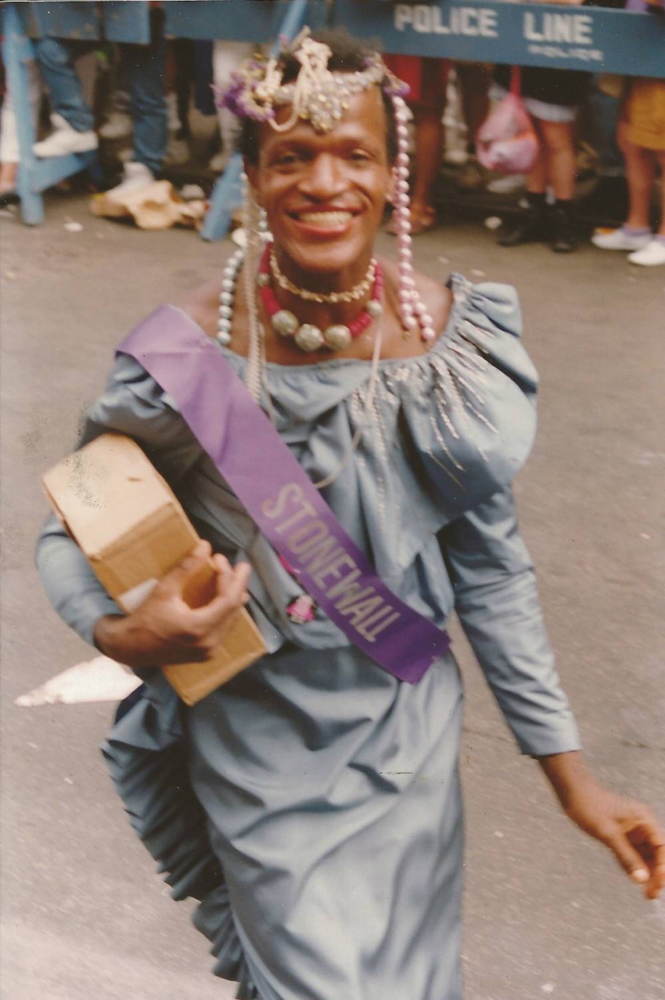
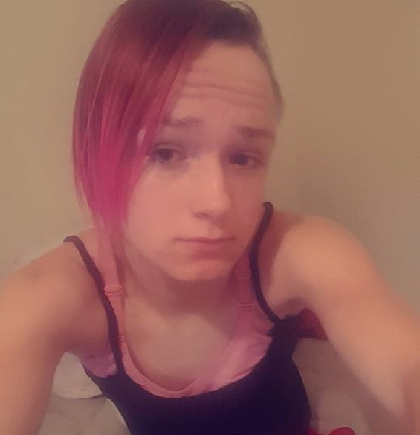

En tant que pratique bien établie au sein de la culture queer, de nombreux utilisateurs n’ont pas tardé à mettre en évidence les disparités entre les éloges pour Styles et la réalité conflictuelle pour la communauté LGBTQ, en particulier pour les personnes trans et non binaires de couleur. Des tweets suggérant que le musicien fait « le strict minimum », à l’écrivain et interprète non binaire Alok Vaid-Menon décrivant la joie et la prudence simultanées qu’iel ressent en ce qui concerne le moment de la mode, l’importance de reconnaître la politique qui l’entoure ne peut être exagérée.

Une pratique répandue depuis longtemps chez les personnes transgenres et drag queen, notamment avec l'activiste Marsha.P Johnson
Article de Florian Bardou — 20 novembre 2017 à 20:26
Elle s’appelait Ally Lee Steinfeld. Elle avait 17 ans et vivait dans une localité rurale de 2 000 âmes, Houston, dans le Missouri. Comme toutes les ados de son âge, elle allait au lycée et elle aimait publier des selfies sur Instagram. Ally Lee avait aussi fait son coming out trans récemment : elle en était fière et s’en félicitait sur les réseaux sociaux. C’était avant que des «amis» ne mettent fin à ses jours début septembre. Trois semaines après sa disparition, ses restes calcinés ont été découverts à côté du mobile-home de sa petite amie, Briana Calderas. Cette femme de 24 ans et deux adolescents ont dans la foulée avoué le meurtre sordide d’Ally Lee tandis que les autorités ont, elles, refusé de parler de crime de haine.
https://www.liberation.fr/planete/2017/11/20/plus-de-300-transgenres-tues-cette-annee_1611381/

Harry Styles fait-il ainsi du queerbaiting en ignorant les conséquences de cette transgression des genres sur la vie des LGBTQ+ ?
« S’il était ouvertement gay, on ne parlerait sûrement pas autant de son style, car cette flamboyance serait presque attendue, comme c’est le cas avec Billy Porter ou Jonathan Van Ness [de l'émission Queer Eye, ndlr], par exemple », complète-t-elle. C’est subversif tout en restant consensuel parce qu’on se demande si Harry est hétéro sans trop en douter. « Un peu comme Françoise Hardy ou Catherine Deneuve choquaient dans les années 1960 en smoking Saint Laurent, sans provoquer de débat sur l’identité de genre ou la sexualité. C’est d’ailleurs ce qui vaut à Harry Styles d’être régulièrement accusé de queerbaiting. Comprendre : « Attirer l'attention d'une audience LGBTI+ par des “appâts”, des détails éloignés du schéma hétéronormé. C’est jouer sur les codes de genre et de sexualités sans jamais s’engager sur le fond », nous explique Kelsi Phung, artiste d’animation et activiste sur les questions d’identités et de genres. Le Guardian a posé frontalement la question à Harry Styles en décembre 2019 qui a ainsi répondu : « Il ne s’agit pas de : “Ne pas répondre car je ne veux pas le dire”. Ni de : “Cela m’appartient, ce n’est pas à vous”. Mais bien : “Qui s’en soucie ?”» Nébuleuse réponse qu’il tente de préciser plus loin : « Est-ce que je saupoudre des bouts d'ambiguïtés sexuelles pour me rendre intéressant ? Non. […] Je veux que les choses ressemblent à ce que je veux. Non parce qu’elles vont me donner l’air gay, ou hétéréo, ou bisexuel, mais parce que ça me semble cool. » Choisir de ne pas trancher et laisser jaser.
https://www.vanityfair.fr/mode/story/harry-styles-ce-que-ses-looks-racontent-des-masculinites/13166